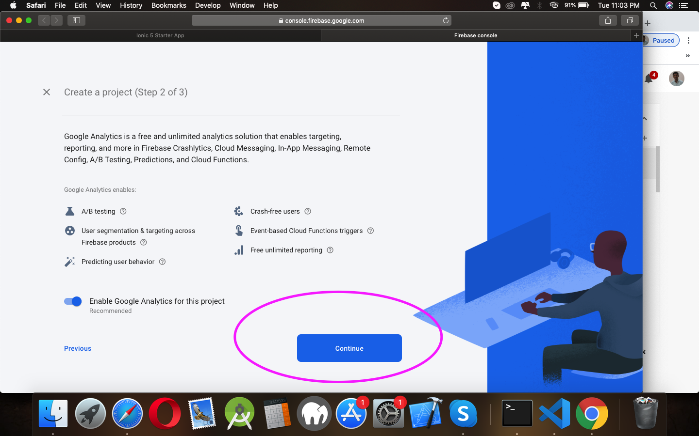
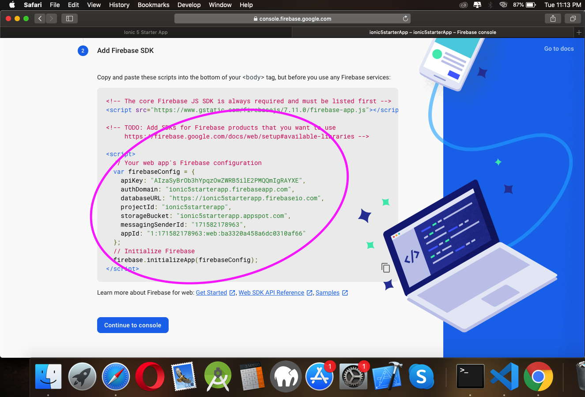

Ionic 5 starter full app
Full Functoinal ionic starter app
- by: initappz
- website: https://initappz.com/
- email: contactatracp@gmail.com
WHY IONIC 5
ionic 5 introduces our brand new open source animations utility, Ionic Animations, that provides the tools developers need to build highly performant animations regardless of the framework they are using
The largest change in this release of ionic 5 is a massive design upgrade across our UI components. Apple recently released iOS 13, which updated the design of many components and thus warranted some updates to our own. Let’s check out some of the changes we made to match native iOS!
All of these changes are made in the core of Ionic Framework, which also applies to our Angular, React, and Vue (beta).
You may be concerned about the upgrade process due to the fact that this is a major version release, but fret not! When we migrated to follow the semantic versioning convention, we committed ourselves to publish a major release when any known incompatible API changes were introduced. So in this case, the major version just indicates that our public API has been updated. And because we now use Web Components, API changes are handled separately between our UI components and the JavaScript framework.
WHY ANGULAR
Angular implements MVC architecture to develop web application. It provides a platform where only few attributes needs to be added to the HTML language and progress with the development will be faster. It enhances HTML which makes all difficult tasks move smoothly
Angular makes it easy to arrange things like dynamic loading and dependencies and utilize them as required without worrying about instances and namespaces. Angular will take care of the complete life cycle of the objects thus handles dependencies in an exceptional way.
Angular contains many ready made tools and components that would reduce the development time, also in each version release of angular it is made simpler and faster.
Angular utilizes two-way data binding; the benefit of two-way data binding is that updates to the underlying data store happen automatically. When the data store updates, the UI updates as well. This allows you to remove a lot of logic from the front-end display code, particularly when making effective use of Angular’s declarative approach to UI presentation. In essence, it allows for true data encapsulation on the front-end, reducing the need to do complex and destructive manipulation of the DOM.
Getting Started
Hello and welcome to the ionic 5 starter full app user guide. This guide covers all the needed information for building an amazing mobile apps, as well as some helpful tips and tricks that will make your experience working with the starter theme easier and more enjoyable. If you need any additional assistance while using our starter app, you can always contact us via email and our support team will be glad to help you out.
In this first section we will go through the essential steps required to start building your mobile apps with the ionic 5 starter full app. We will explain how to user this starter app.
Installing starter
After downloading the ionic 5 starter full app file from our website initappz, extract it and in the extracted folder locate the starters.zip file. You can then use this starter apps using ionic CLI
-
Installing Ionic
Ionic apps are created and developed primarily through the Ionic command-line utility. The Ionic CLI is the preferred method of installation, as it offers a wide range of dev tools and help options along the way. It is also the main tool through which to run the app and connect it to other services, such as Ionic Appflow.
Install the Ionic CLI
Before proceeding, make sure your computer has Node.js installed. See these instructions to set up an environment for Ionic.
Install the Ionic CLI with npm:
If there was a previous installation of the Ionic CLI, it will need to be uninstalled due to a change in package name.
Troubleshooting FAQ
*having issue? contact us on our mail
Folder Structure
-
Folder Structure
Once You Download the Product You will Receive the Zip File which contains Project Zip. Named as App_Source_Code.zip
Unzip the App_Source_Code.Zip File And You Will Find The Zip File Of All The Projects Like in ScreenShot:

Open the Installations Guides.pdf File for Installations and Setup Instructions.
Note If you wish to Use whole project instead of the Some Content of Project then you can Directly use it as Shown in Installations Guides.pdf file
When you unzip the App_code.zip then You will have the Project Source Code
You will find the Folder name as App_code
Now Open Terminal for Mac or Command Prompt for Windows and Open App_code Folder Inside terminal.

Now Follow the Instructions in Installations Guides.pdf file for further Installations Steps.
Now Open the App_code folder inside your Code Editor Like Visula Studio code ,sublime etc. you will see the structure of Ionic Projects
Now Open the config.xml file and Change the Name and Other Stuff like app version and app package name.
Next if you want to change the Theme Color of Your Application. you can do it from your self by changing the color code of this file. open src/app/theme/variables.scss file and you can find the rest of the code like in image you can change color of primary as your default app color
Note: color should be in hex format only.
Now to use rest of the Screens and Config you can find in app folder and pages,components, folders
For FrontEnd designs you Can Edit the Code inside .html File and The css you can edit or add inside .scss file.
Ionic 5 use Html as FrontEnd designs which is Easy to Develop. you can find The Component of Ionic From here
You can see the Structure of Html from in Image
Ionic 5 use scss as StyleSheet !, the scss is same as css.
Ionic 5 use Typescript as Business Login Development you can write your login inside the .ts file.
Configurations
-
Firebase Configurations
Firebase gives you the tools to develop high-quality apps, grow your user base, and earn more money. We cover the essentials so you can monetize your business and focus on your users.
Let's Integrate Firebase in your app
open environment.ts file in src/environment folder, here you can find two environment file, one is for debug mode and one is for production mode. you can set your credentials here for better security
Visit Website for more about firebase and installation here
Now as you can see in below image, we have set many credentials for various apis
For firebase You have to create new Project
Open your browser and visit Create it here
Now Create new project as you can see in image below
Next is to give name of your project and click on continue button
Now Final step
Once you setup for firebase is completed ut will redirect you to dashboard. as given below
Now We have to add type of platform for firebase. you can create android,ios and web version of platform
For us we are going to create it with web platform, so click on web button as you can see in image below
After selecting this platform it will Prompt new page as you can see in image below, so now again we need to add name here it will display on screen when we use instance of firebase, so give your platform name here and click on Register App Button.
tadda.. our app is now ready to use. now just copy those code as you can see in image below and paste it in environment file

Configurations One signal
-
One Signal Configurations
OneSignal is the market leader in customer engagement, powering mobile push, web push, email, and in-app messages.
Let's Integrate one Signal in your app
Fisrt install OneSignal for ionic here
After installing onesignal in your app now we have to create OneSignal app from here login or sign up with your accounts details
After login in onesignal you will redirected to OneSignal dashboard as you can see image below. now let's create new app here
Give you app name here and select platform for OneSignal app, here you can add android, ios and web same as firebase. for now we will add it for android. so select android and click Configure platforms
After giving name of your app new Prompt will display. as you can see in image below
For this keys we need to add firebase keys now visit firebase console again
Now click on Project Overview button and click on Project settings
Now click on cloud messaing and copy the server key and sender id and add it in OneSignal app settings
Now click on next button and select cordova platform here and click next.. our app is now created succesfully now

Now just replace your keys with environment OneSignal credentials
Now open your app.component.ts file in text editor and add code for OneSignal initialization code
Make sure you have to run your app first after adding OneSignal in your ionic app
Configurations Google Maps
-
Google Maps Configurations
Open index.html inside src/ and add your google maps keys
You can get your keys here
Configurations REST APIs
-
REST APIs Configurations
CodeIgniter lets you creatively focus on your project by minimizing the amount of code needed for a given task. Codeigniter Development is one of the best PHP framework in web Application Development. ... As compared to the other frameworks, Codeigniter Development is fast, reliable, its time and speed is significant.
here we will use Codeigniter for our REST APIs, you can download it from here here
here i am using MAMP as my local server in my Macbook, you can use XAMP, LAMP, WAMP as your local server
Now inside App_Source_Code zip you can find REST-APIs.zip. extract this file and you can see there is database.sql file will be there
Next step is to copy that REST-APIs source code inside htdocs and import database.sql in your phpmyadmin section
Create new database and give name as rest and import that database.sql file
After placing that REST-APIs source code inside htdocs and importing database.sql in your system we need to add credentials for Codeigniter
For That open application/config/database.php and add your server credentials here. as you can see in image below
here username and password for your local server and database is for name of our database and host is address for running it locally
To verify installation status of rest REST-APIs just open project in your browser
If you see image like above then your installation is successfully done.
Here we have used IONIC Native HTTP client for APIs call so it will run only on your Mobile devices
IONIC Native HTTP is better way to integrate your api for your project.
If You facing issue with CORS then it's better to user IONIC Native HTTP
here i am using POSTMAN for API testing
You can find APIs DOCs here
Troubleshooting FAQ
*having issue? contact us on our mail